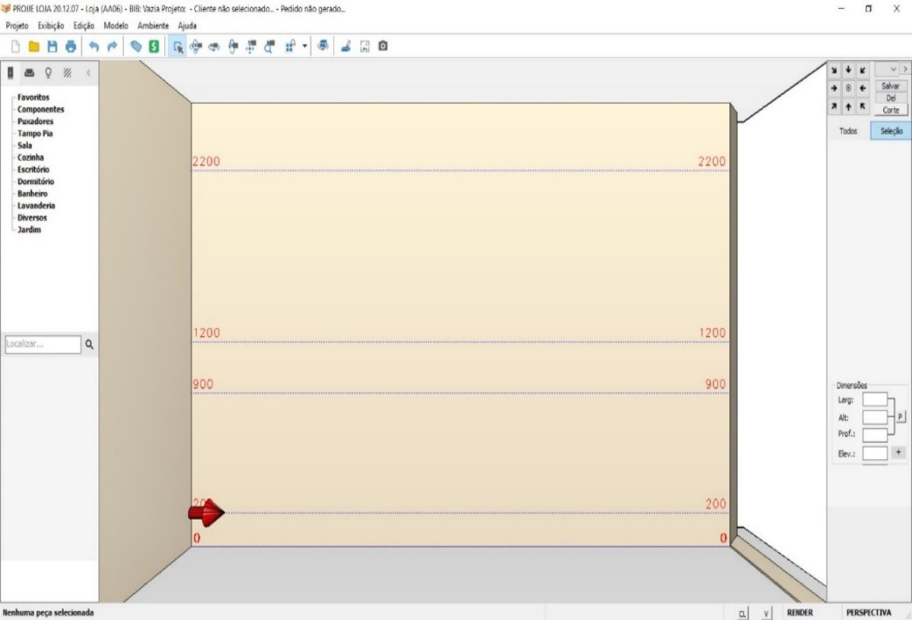
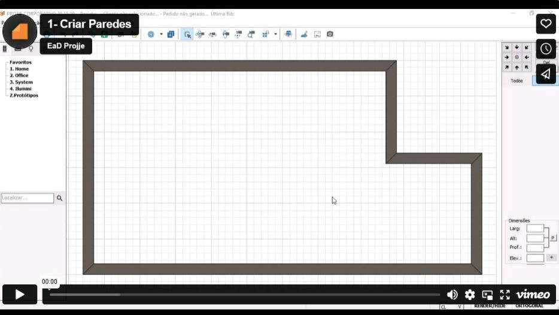
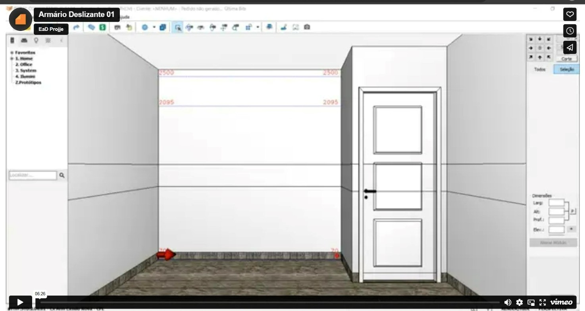
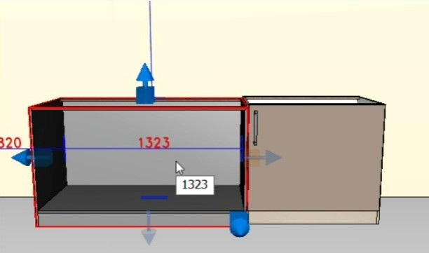

Visão Geral
Nesta fase da Visão Geral, apresentaremos a tela principal do usuário. É a partir dela que você terá acesso à todas as funcionalidades do sistema. Também será apresentada a importância do mouse em um programa 3D, neste caso, exclusivamente para você parceiro.
(1) Menus do Sistema (2) Barra Superior (3) Barra de Propriedades (4) Barra Inferior (5) Catálogos (6) Paredes
Mouse - Sua Extensão
Depois do teclado, o mouse é o dispositivo mais usado para a execução das mais variadas tarefas em um computador. Em sua essência, o mouse nada mais é do que um dispositivo que controla um cursor (ou ponteiro) na tela da máquina, servindo como uma espécie de extensão das mãos de uma pessoa e, mais precisamente, como meio de comunicação entre o projetista e o computador.

É claro que é possível utilizar um computador sem mouse, mas esse dispositivo é tão prático e tão comum, que a maioria esmagadora das aplicações gráficas são desenvolvidas considerando o seu uso. Assim sendo, que tal entender um pouco do funcionamento e de como ele facilita o uso de nosso sistema.
ESTRUTURAÇÃO
Os projetos 3D agregaram realismo às representações, agilidade nas definições e, caso necessário, alterações imediatas no projeto. Logo, o 3D permite ao profissional visualizar o que criou e editar rapidamente o que for preciso.
Acesso a todas as vídeo aulas
Criar Paredes
Desenhar as paredes é o processo preliminar de qualquer ambientação, é nele que delineamos o espaço a ser trabalhado.
Editar Paredes
Caso seja necessário alterar as medidas, incluir ou remover, após assistir esse vídeo você será capaz de fazer essas alterações quando necessário.
Aberturas e Pontos Elétricos e Hidráulicos
Nesta aula vamos apresentar como se dará a inserção de portas, janelas, pontos elétricos e hidráulicos, bem como posicioná-los adequadamente nas respectivas paredes.
Criar Formas Geométricas
É hora de explorarmos as Formas Geométricas, sejam em posições frontais, laterais ou horizontais. Portanto, sugerimos um esforço adequado no domínio dessa funcionalidade, uma vez que permite inúmeras possibilidades na criação de tampos de bancadas, sacas de gesso, vigas, colunas, sóculos e rodapés, entre outros.

CONTEXTUALIZAÇÃO
Inserir Objetos Decorativos
A próxima aula também requer uma dedicação extra, uma vez que os objetos decorativos valorizam os projetos, contextualizando os ambientes. Assim se faz necessário habilidade no trato das funcionalidades relacionadas, tais como: inserir, editar, mover, inclinar, rotacionar, agregar, entre tantas outras possibilidades.
Aplicar Texturas
Agora vamos cuidar da aplicação de texturas e revestimentos, inclusive esclarecer como o sistema os difere.
APRESENTAÇÃO
Salvar Vistas e Renderizar
Quando concluímos o projeto é hora de apresentar o trabalho. As funcionalidades de salvar vistas e renderizar são importantíssimas neste quesito, elas propiciam realismo às imagens.
Imprimir
Uma vez geradas as imagens, seja no formato vistas ou renderizado, se faz necessário adicionar informações complementares, ora para atender o cliente externo (demandante do projeto) ora para os clientes internos (montadores e equipe técnica de produtos); tanto para gerar as expectativas corretas, como para executar a entrega como previsto. Essas funcionalidades encontramos na impressão, seja em papel propriamente dito ou através do formato em pdf. Nessa aula vamos lhe mostrar como fazer.
SINGULARIDADE DO SISTEMA
Combinatividade
A linhas de produtos desenvolvidas possuem uma característica singular, fornecemos as estruturas das caixarias vazias e sem rótulos de ambientes, que por sua vez podem receber os respectivos agregados, ou seja, os acessórios, aramados, outras caixarias, as frentes, os internos e automatizações (rodopias, tampos, tamponamentos, rodapés e rodatetos). Facilitando inúmeras combinações que podem ser salvas posteriormente em favoritos, aí sim, caso queiram, poderão organizá-los por ambientes como: área de serviços, banho, cozinha, home office, quarto e sala. Armários
1. Armários Módulos compostos por estruturas conhecidas como torres, dispensários, colunas ou roupeiros; essa descrição depende muito do ambiente em que estiver inserido, disponíveis nas opções com e sem rodapés.
2. Inferiores Módulos compostos por estruturas conhecidas como balcões, bancadas e sob pia; podendo conter ou não rodapés ou ficarem até mesmo suspensos (fixados na parede).
3. Superiores Módulos compostos por estruturas conhecidas como de parede e maleiros, sendo muito versáteis e participando de várias soluções.
4. Agregados Uma ampla gama de possibilidades que podem ser combinados com as estruturas já vistas ou mesmo entre si, com as alternativas disponíveis você poderá criar diversas soluções organizadoras, adicionando ou removendo as opções que desejar.
“O resultado será um módulo adequado às necessidades de seu cliente.”
Exemplo Prático
Neste vídeo vamos mostrar a criação de um armário deslizante, observaremos as facilidades que o projetista terá para desenvolver seus trabalhos.
USABILIDADE DAS MODULAÇÕES
Inserção dos Módulos
Nessa aula vamos apresentar os modelos que você tem para fazer a inclusão.
Edição de Medidas
Nessa aula vamos tratar da edição de medidas dos módulos.
Mover livre
Ao clicar e arrastar sobre um objeto ele será movimentado livremente no plano da parede ou do piso.
Movimentar livre na parede
- Se o objeto estiver encostado na parede ele será movimentado no plano da parede.
- Se existir outros objetos nessa parede, o objeto movimentado sofrerá uma pequena resistência na sua movimentação sempre que ficar alinhado na base ou no topo do objeto ao lado.
Mover com o botão direito do mouse
Arrastar objeto para outra parede ou piso
- Segure o botão direito do mouse sobre o objeto e arraste para a parede desejada.
- Solte o objeto sobre o piso caso deseje que ele desencoste da parede.
Arrastar objeto sobre outro
1. Segure o botão direito do mouse sobre o objeto e arraste sobre o outro objeto.

2. A tela de reposicionamento será exibida.

Redimensionar Objetos
Clique e arraste o manipulador cubo no sentido desejado para redimensionar o objeto.
Dê duplo-clique no cubo para que o objeto redimensione até preencher todo o vão.
Compartilhamento das Laterais
Para compartilhar as laterais, a linha de produtos precisa ter a funcionalidade habilitada.
Estruturação dos Módulos
Nessa aula vamos apresentar como podemos estruturar um módulo.
Inserção de Gavetas e Sapateiras Internas
Nessa aula vamos apresentar a inserção das gavetas e sapateiras interna de forma simples e didática.

Avanços das Frentes
Vamos apresentar como você parceiro pode controlar o avanço das frentes.
Movimentação Interna
Inserindo no módulo uma lateral interna e uma base intermediaria, selecione o componente pressione o controle e dê dois clicks.
Combos de Identidades / Automatizações
Aula de como criar novo ambiente, para criar um novo ambiente click no botão projeto novo no menu projeto e em seguida novo.

FUNCIONALIDADES E ACESSÓRIOS
Orçamento
Este diferencial proporciona a gestão adequada para obtenção de margem nos seus projetos, saberá antecipadamente o que deverá ser pago aos fornecedores antes mesmo de fechar suas negociações, evitando tomar decisões equivocadas na precificação por m2 ou estimativas catastróficas.
Para acessar o relatório de venda basta ir no Menu Projeto / Orçamento ou aperte o Ctrl L. Neste relatório, após a devida indicação de Mark-Up ou Coeficiente de Revenda você obterá o preço de venda/negociação.
Envio de Pedidos
Realizado o projeto, concluída com sucesso a negociação, será preciso conferir as medidas dos ambientes e enviar o pedido para o parceiro industrial. O sistema Projje conta com uma funcionalidade de envio do pedido, aliado a um servidor dedicado para receber, protocolar e programar sua produção. Tudo isso de forma automatizada, o que proporciona assertividade das informações, rapidez no seu trato e eficiência nas operações de corte, filetação, furação, embalagem e expedição.
1. Para enviar o pedido basta acessar o Menu Projeto / Pedido Fábrica, digitar a senha (123 originalmente) e, uma vez que o relatório de custo se abra, clique no botão "Enviar Pedido". Em alguns instantes será apresentado um protocolo com o registro do pedido. 2. Também no Menu Projeto / Histórico de Pedidos você encontrará todos os pedidos enviados pela sua licença. 3. ATENÇÃO - Não realize envio de pedidos com dois ou mais projetos abertos, isso pode gerar conflito no banco de dados incorrendo em possíveis inconformidades.